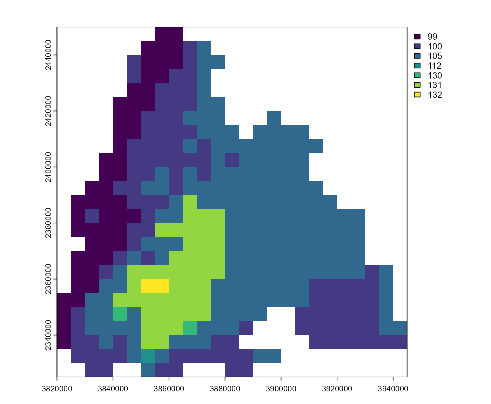
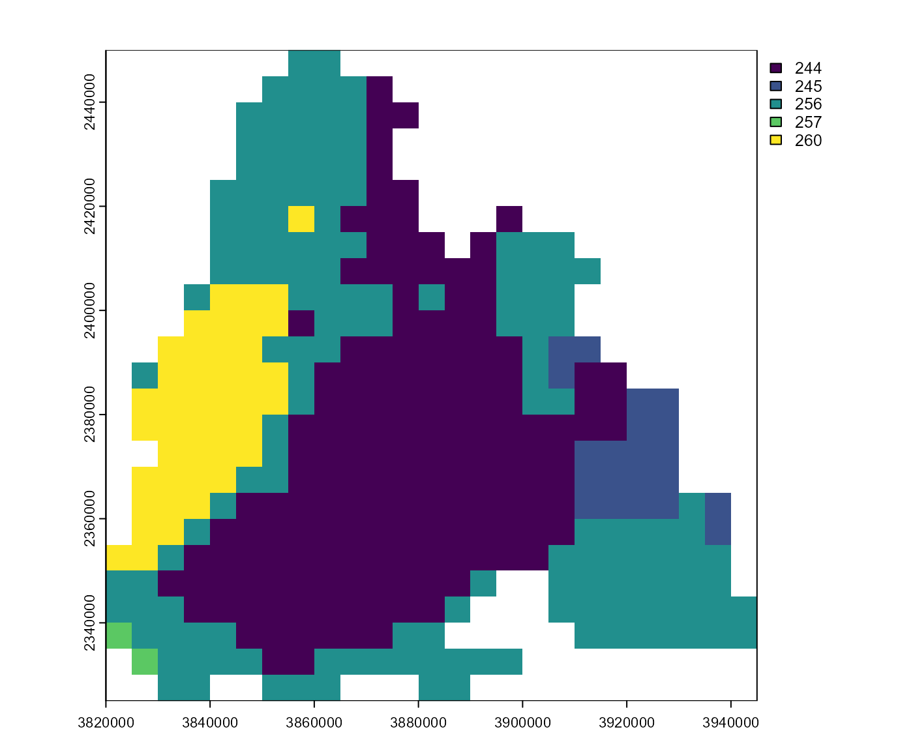

Get onset, diapause or mortality as day of year or raw output. Note that multiple mortality events are possible over the season.
Usage
get_onset_rst(pheno, as_doy = TRUE, dates = prop_dates(pheno))
get_onset_df(
pheno,
stations = prop_stations(pheno),
as_doy = TRUE,
dates = prop_dates(pheno)
)
get_diapause_rst(pheno, as_doy = TRUE, dates = prop_dates(pheno))
get_diapause_df(
pheno,
stations = prop_stations(pheno),
as_doy = TRUE,
dates = prop_dates(pheno)
)
get_mortality_rst(pheno, as_doy = TRUE, dates = prop_dates(pheno))
get_mortality_df(
pheno,
stations = prop_stations(pheno),
as_doy = TRUE,
dates = prop_dates(pheno)
)Arguments
- pheno
A phenology (see
phenology())- as_doy
If
TRUE, the day(s) of year will be returned. IfFALSEthe phenological events will be returned in a raw format. Then, the return value could be used as input forphenology()/bso_phenology()(parameters.onset,.diapauseand.mortality).- dates
Select dates that should be present in the output.
- stations
Pass a character vector to choose stations assigned to
phenoby their names, or pass different stations. Seestations_create()for details.
Value
get_onset_rst(),get_diapause_rst(),get_mortality_rst(): A (multi-layer) SpatRaster.get_onset_df(),get_diapause_df(),get_mortality_df(): A data frame.
Functions
get_onset_rst(): Returns a (multi-layer) SpatRaster of the onset.get_onset_df(): Returns a data frame of the onset.get_diapause_rst(): Returns a (multi-layer) SpatRaster of the diapause.get_diapause_df(): Returns a data frame of the diapause.get_mortality_rst(): Returns a (multi-layer) SpatRaster of the mortality.get_mortality_df(): Returns a data frame of the mortality.
Examples
# \donttest{
# calculate phenology
p <- phenology('phenips-clim', barrks_data(), .quiet = TRUE)
# plot onset, diapause, mortality
get_onset_rst(p) |> terra::plot()

get_diapause_rst(p) |> terra::plot()

get_mortality_rst(p)[[1]] |> terra::plot()
# }